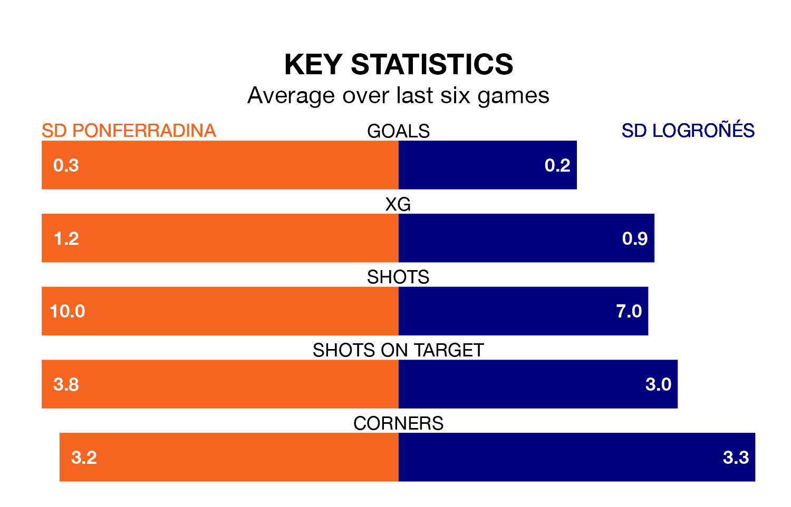

SD Ponferradina are heavy favourites to keep all three points at home in Sunday's kick-off against SD Logroñés.
Ponferradina, who sit fifth in Primera Division RFEF Group 1 with 31 games played, are priced at 1.3 to seal victory at the Estadio El Toralín.
Sitting 14 places and 26 points behind them in the table, Logroñés are 8.5 to win with *Betting Company*, while the draw is at 4.1.
Ponferradina are in disappointing form in Primera Division RFEF Group 1, with one win and two draws from their last six games.
With no wins and two draws over that period, Logroñés's form is worse – they have taken two points from 18, compared to the hosts' five.
In Andrés Tomás Prieto Albert, Ponferradina can rely on one of the league's safest pair of hands. He has kept 12 clean sheets in his 25 appearances this season, and only one other 'keeper – Cultural y Deportiva Leonesa's Miguel Bañuz Antón – has been able to prevent the opposition scoring on more occasions in Primera Division RFEF Group 1.
In the away side's net, Ander Iruarrizaga Díez has four clean sheets in 23 games. He has conceded a goal every 63 minutes, more than twice as often as the 150 minutes between goals for Prieto Albert.
With 21 goals in 31 games so far this season, Logroñés are the league's lowest scorers with 0.7 goals per game. And they are conceding more than average, letting in 44 goals at a rate of 1.4 per game.
Ponferradina, meanwhile, are average scorers, with 1.0 goal per game. They have conceded 0.6 goals per game.
Ponferradina's last match was on April 6, a 1-0 win against Rayo Majadahonda.
Logroñés drew 0-0 with Cultural y Deportiva Leonesa last time out, on Sunday.
Updated: 10:01 (UTC), 12/04/24